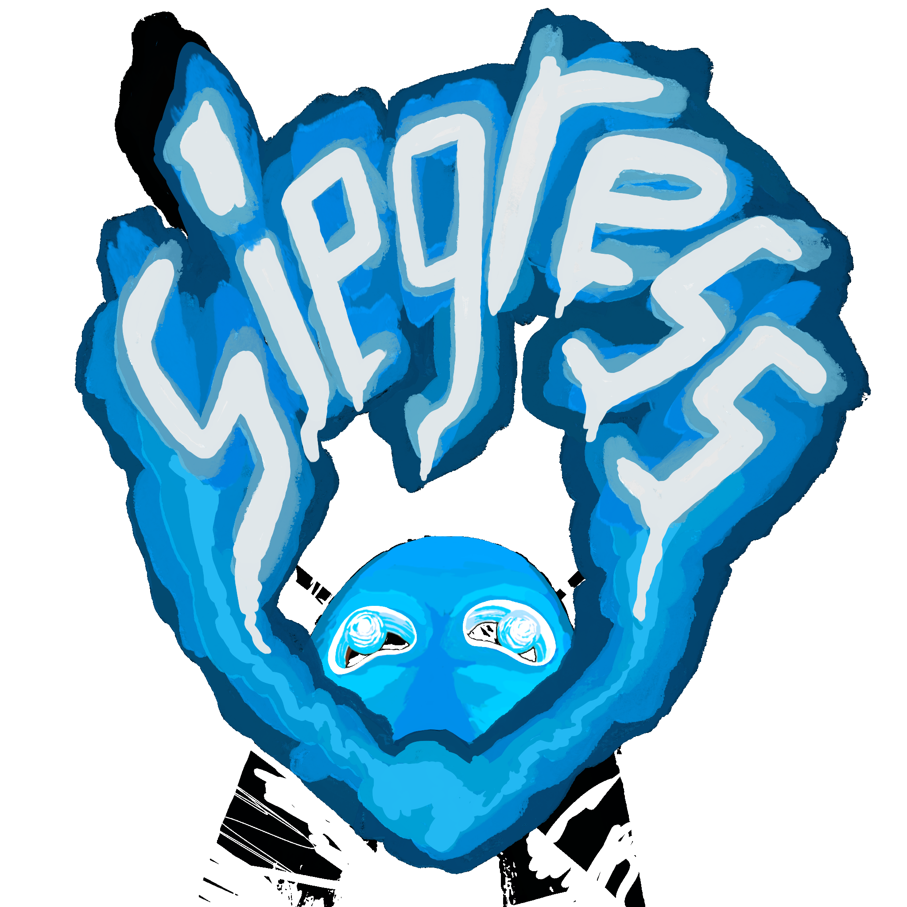

Click to lock • WASD move • Shift sprint • Space jump • R regulate
PSIONIC CRITICALITY
0
%
>
Tab to close • Enter to run • noclip toggles fly mode • player toggles prism stand-in
YOU HAVE DIED
Press
R
to respawn

loading.
This work is a work of fiction.
All characters and events portrayed in this game are fictional.
Any resemblance to real persons, living or dead, or actual events is purely coincidental.